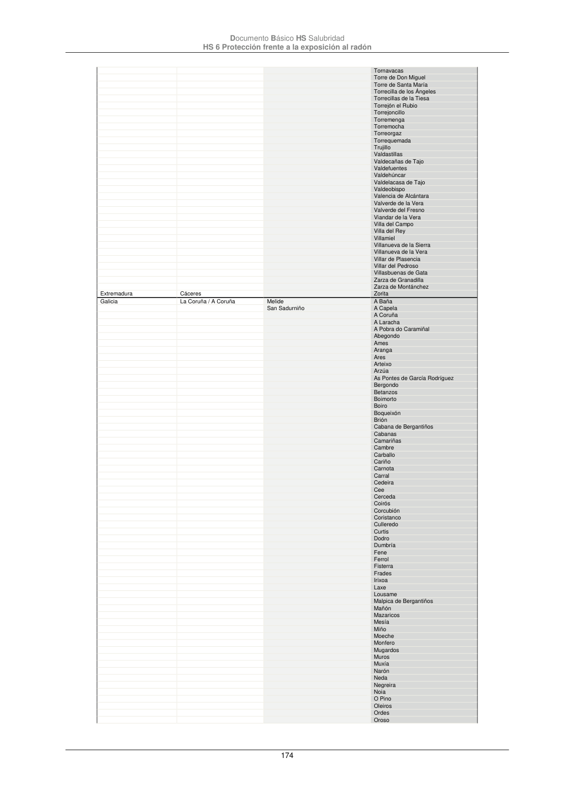

DB-HS Salubridad · edición 2022-06-14 · capa oficial
Documento DB-HS-oficial · SHA-256 del PDF 68df3caacc95f71aee2ec1ba7b2c65ae66155c21e3a8785521b8fdd4fd640d3b
Página física 174 de 184.
Copia fiel del PDF fuente · Fuente oficial
Ficha de la disposición en la fuente oficial
Formato: Texto de la página (Markdown)
Documento Básico HS Salubridad HS 6 Protección frente a la exposición al radón 174 Tornavacas Torre de Don Miguel Torre de Santa María Torrecilla de los Ángeles Torrecillas de la Tiesa Torrejón el Rubio Torrejoncillo Torremenga Torremocha Torreorgaz Torrequemada Trujillo Valdastillas Valdecañas de Tajo Valdefuentes Valdehúncar Valdelacasa de Tajo Valdeobispo Valencia de Alcántara Valverde de la Vera Valverde del Fresno Viandar de la Vera Villa del Campo Villa del Rey Villamiel Villanueva de la Sierra Villanueva de la Vera Villar de Plasencia Villar del Pedroso Villasbuenas de Gata Zarza de Granadilla Zarza de Montánchez Extremadura Cáceres Zorita Galicia La Coruña / A Coruña Melide A Baña San Sadurniño A Capela A Coruña A Laracha A Pobra do Caramiñal Abegondo Ames Aranga Ares Arteixo Arzúa As Pontes de García Rodríguez Bergondo Betanzos Boimorto Boiro Boqueixón Brión Cabana de Bergantiños Cabanas Camariñas Cambre Carballo Cariño Carnota Carral Cedeira Cee Cerceda Coirós Corcubión Coristanco Culleredo Curtis Dodro Dumbría Fene Ferrol Fisterra Frades Irixoa Laxe Lousame Malpica de Bergantiños Mañón Mazaricos Mesía Miño Moeche Monfero Mugardos Muros Muxía Narón Neda Negreira Noia O Pino Oleiros Ordes Oroso

Datos candidatos: compruebe celdas y notas en el PDF.